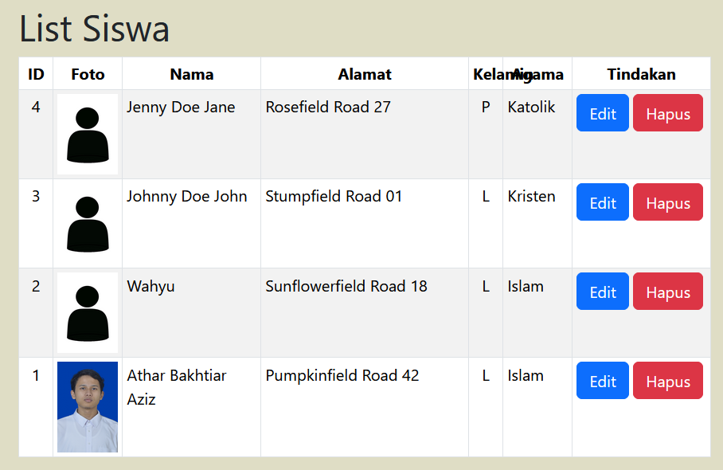
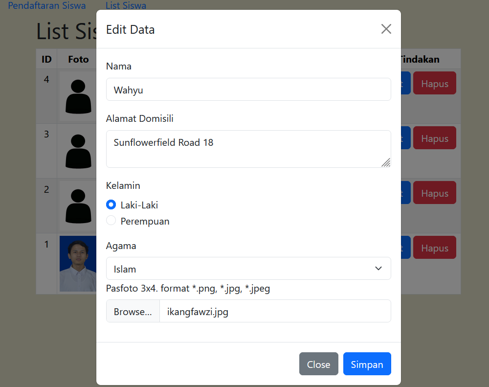
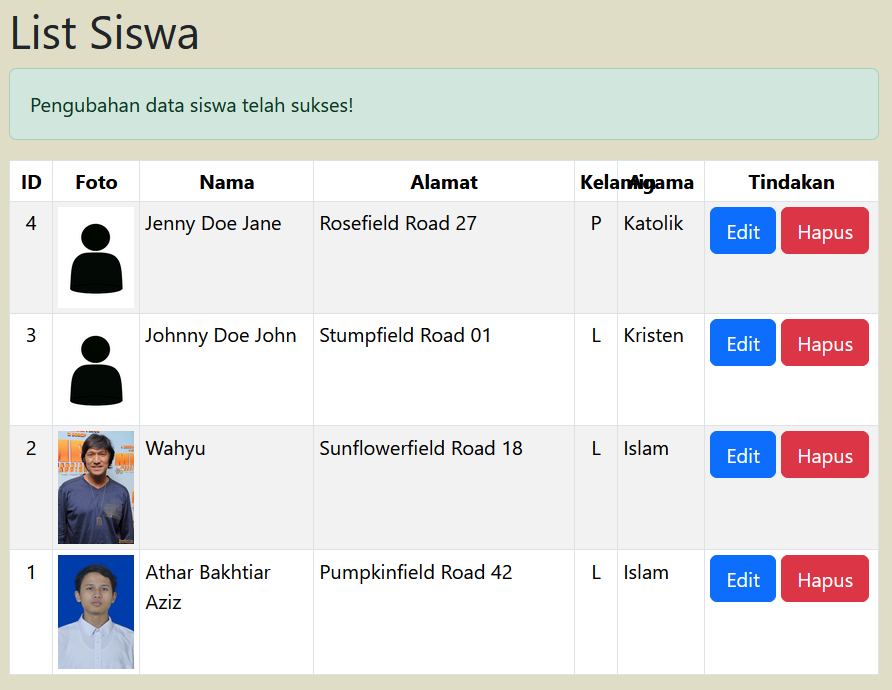

In this task, we were tasked to use PHP to add a profile photo (pas foto) to the student's data in a student registration system, enabling the user to upload a photo to be used for creating student data with the photo and editing the student's photo.
To do this task, I use the student registration system that I made in Week 9 as a base to build on.
To set it up, run the contents of setup.sql in your phpMyAdmin first. It'll create a database named pweb_php_5025241136. If the database is already there, it will overwrite the whole database so it can be used in this web program.
Here are my results:
Source code

